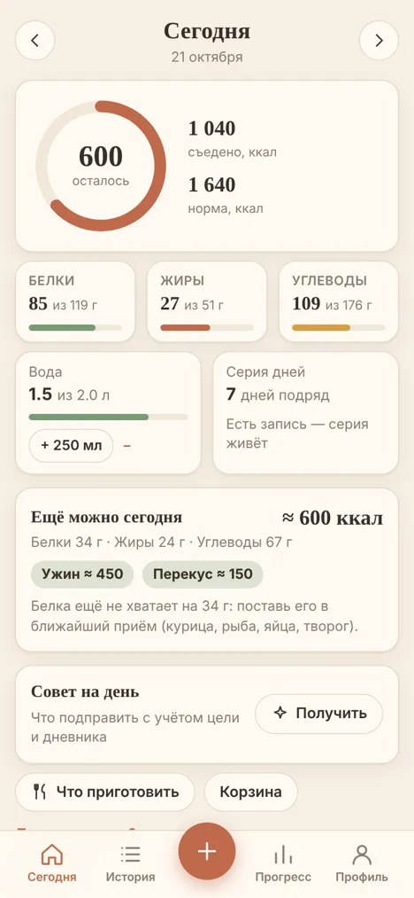
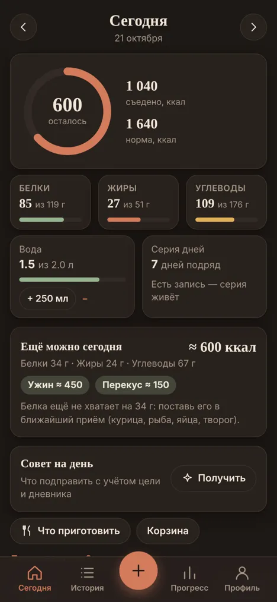
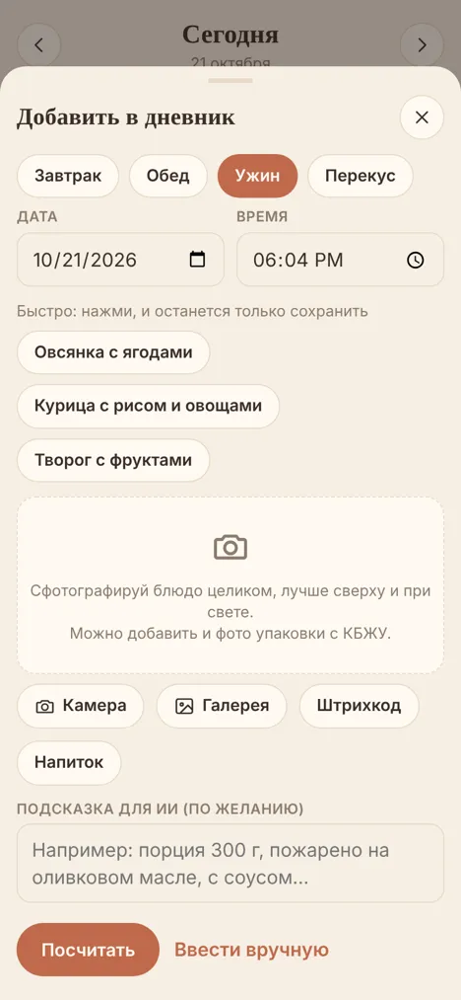
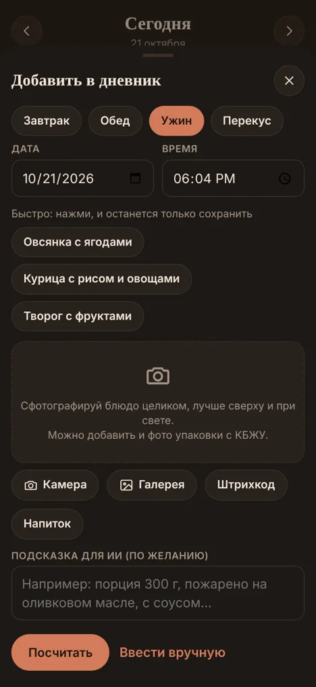
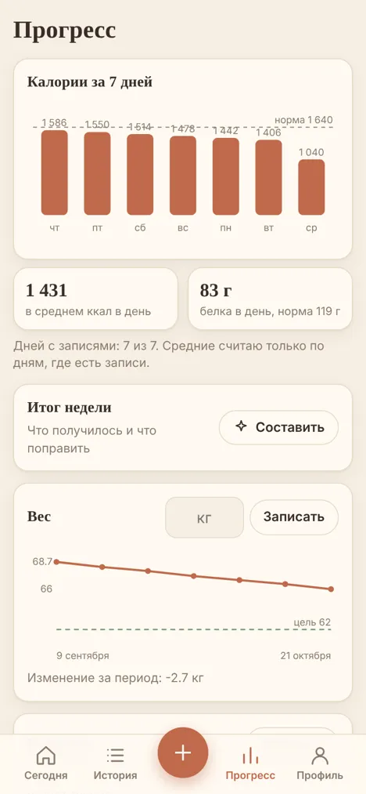
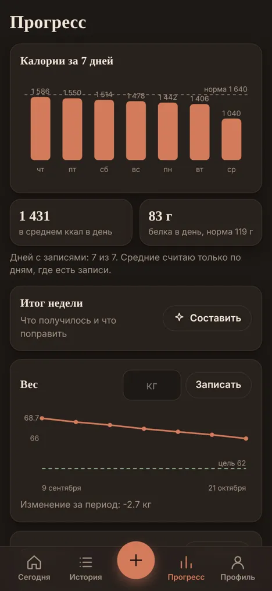

Дневник питания, который не ругаетсяA food diary that doesn’t scold
Сфотографируй еду, ИИ прикинет калории и БЖУ, ты поправишь граммы. Без нравоучений и штрафов за «плохой» день. Дневник бесплатный, а первые 3 дня подписки дарятся за подтверждённую почту, карта не нужна.Snap your meal, AI estimates calories and macros, you adjust the grams. No lectures and no penalties for a “bad” day. The diary is free, and the first 3 days of the subscription are a gift for confirming your email, no card needed.
Пока только для телефона: iPhone и Android. Это не приложение из App Store или Google Play: оно открывается в браузере и ставится на главный экран. Интерфейс на русском. Оценки ориентировочные, это не медицинское приложение.For phones only for now: iPhone and Android. It is not an App Store or Google Play app: it opens in the browser and installs to your home screen. The interface is in Russian. Estimates are approximate and this is not a medical app.


Три шага, минута в деньThree steps, a minute a day
Есть рядом упаковка с таблицей КБЖУ, данные берутся с неё. Можно описать блюдо словами.If the package with a nutrition table is nearby, the data is read from it. You can also describe the dish in words.
СфотографировалSnap it
Одно или несколько фото блюда.One or several photos of the dish.
ИИ прикинул, ты поправилAI estimates, you adjust
Это прикидка, а не точное взвешивание, поэтому граммы всегда можно изменить.It is an estimate, not exact weighing, so you can always change the grams.
Видишь остаток на деньSee what is left today
Сколько калорий и белка осталось до нормы.How many calories and how much protein remain.
Что есть в приложенииWhat’s in the app
Только то, что уже работает. Браслеты и часы пока в планах.Only what already works. Bands and watches are planned.
- Запись за пару секундLog in secondsФото, штрихкод, голос или пара слов. База продуктов России, СНГ и ОАЭ, свои любимые блюда с точными цифрами.Photo, barcode, voice or a few words. A product database for Russia, CIS and the UAE, plus your own favourite dishes with exact numbers.
- День на одном экранеThe day on one screenКольцо делится на белки, жиры и углеводы, видно остаток калорий. Вода, чай и кофе одним нажатием, «что взять» в меню ресторана в два тапа.A ring split into protein, fat and carbs shows what is left. Water, tea and coffee in one tap, “what to order” from a restaurant menu in two taps.
- Умные уточненияSmart questionsЕсли от ответа сильно зависят калории, ИИ задаёт один короткий вопрос с вариантами.When the answer changes calories a lot, AI asks one short question with options.
- Что приготовить и меню на неделюWhat to cook and a weekly menuИдеи из того, что есть дома, под остаток нормы. Меню на 3–7 дней сразу со списком покупок. По подписке.Ideas from what you have at home, matched to your remaining target. A 3–7 day menu with a shopping list. Subscription.
- Движение без давленияMovement without pressureШаги и тренировки влияют на запас дня. Помощник предложит одну тренировку под твоё время, место и уровень. Меньше обычного не наказывается.Steps and workouts affect the day’s allowance. The assistant suggests one workout for your time, place and level. Doing less than usual is never punished.
- Дневная нормаDaily targetПо формуле Миффлина–Сан Жеора с учётом цели и активности. Можно задать свою.Mifflin–St Jeor formula with your goal and activity. You can set your own.
- Неделя, вес и отчёт для врачаWeek, weight and a doctor’s reportСредние цифры за неделю, график веса, отчёт для врача или тренера за 7, 14 или 30 дней, выгрузка в CSV.Weekly averages, a weight chart, a report for a doctor or trainer for 7, 14 or 30 days, CSV export.
- ВдвоёмTogetherБлизкие видят друг у друга только итог дня, воду и серию. Записи остаются приватными.People close to you see only each other’s day total, water and streak. Entries stay private.
- Режим «Без цифр»“No numbers” modeНи калорий, ни веса на экране, для тех, кто устал считать. Свои цели вместо цифр, самочувствие и разнообразие.No calories or weight on screen, for those tired of counting. Your own goals instead of numbers, how you feel and variety.
- Без интернетаWorks offlineСтавится на главный экран, есть тёмная и светлая тема.Installs to the home screen, light and dark theme.




Домашняя еда считается точнееHome cooking is counted more accurately
В поле «Мой рацион и как готовлю» можно написать, например: «без масла, рис на воде, порции небольшие». Плюс ограничения, аллергии и предпочтения. Это отличает Tarelka от трекеров, которые считают всё «как в ресторане».In the “My diet and how I cook” field you can write, for example, “no oil, rice cooked in water, small portions”, plus restrictions, allergies and preferences. That sets Tarelka apart from trackers that count everything “as in a restaurant”.
Цены и как получить доступPrices and how to get access
Дневник бесплатный: 3 записи с ИИ в день, без карты и без срока. Подписка снимает дневной лимит и открывает меню, идеи и помощника по движению. Оплата на lava.top картой российского банка, без автопродления. Код доступа приходит на почту из заказа, обычно в течение нескольких часов.The diary is free: 3 AI entries a day, no card and no time limit. The subscription removes the daily limit and unlocks menus, ideas and the movement assistant. Payment on lava.top by a Russian bank card, no auto-renewal. The access code arrives at the email from your order, usually within a few hours.
399 ₽ в месяц399 ₽ per month
≈263 ₽ в месяц≈263 ₽ per month
≈208 ₽ в месяц≈208 ₽ per month
Приложения нет в App Store и Google Play. Ставится с сайта на главный экран: iPhone — Safari → «Поделиться» → «На экран Домой»; Android — Chrome → три точки → «Установить приложение». Первые 3 дня подписки дарятся за подтверждённую почту, и друг по твоей ссылке получает столько же.The app is not in the App Store or Google Play. Install from the site to your home screen: iPhone — Safari → Share → Add to Home Screen; Android — Chrome → three dots → Install app. The first 3 days of the subscription are a gift for confirming your email, and a friend using your link gets the same.
Частые вопросыCommon questions
Насколько точно считает?How accurate is it?
ИИ даёт ориентировочную оценку, а не точное взвешивание. Поэтому ты видишь результат и сам правишь граммы. Это не медицинское приложение.AI gives an approximate estimate, not exact weighing, so you see the result and correct the grams yourself. This is not a medical app.
Куда уходят фото?Where do photos go?
Фото и описания для распознавания отправляются в сервис Google Gemini. Миниатюры фото в облако дневника не сохраняются. Подробности в приложении: «Профиль» → «О приложении и конфиденциальности».Photos and descriptions are sent to Google Gemini for recognition. Photo thumbnails are not saved to the cloud diary. Details are in the app: Profile → About and privacy.
Как удалить данные?How do I delete my data?
Профиль удаляется в самом приложении. Можно также попросить об этом по почте.You can delete your profile inside the app, or ask by email.
Для кого?Who is it for?
Для взрослых, 18+. Для тех, кто считает калории или белок, готовит дома и не хочет тратить на дневник больше минуты в день.For adults, 18+. For people who count calories or protein, cook at home and do not want to spend more than a minute a day on a diary.
Скриншоты на странице демонстрационные: профиль «Демо», выдуманные записи.Screenshots on this page are demos: a “Demo” profile with made-up entries.
← Все проектыAll projects